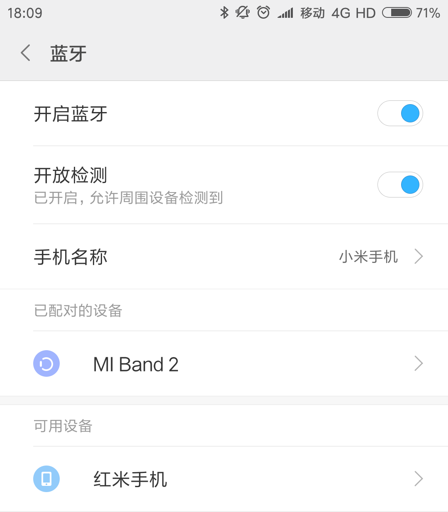
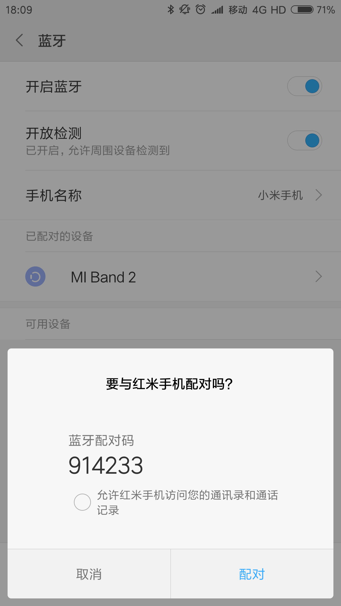
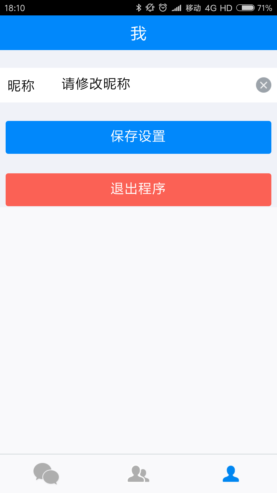
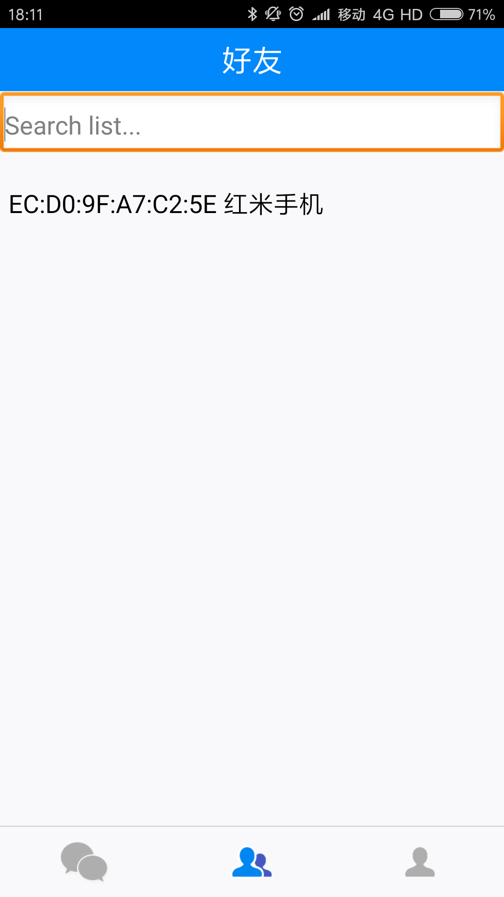
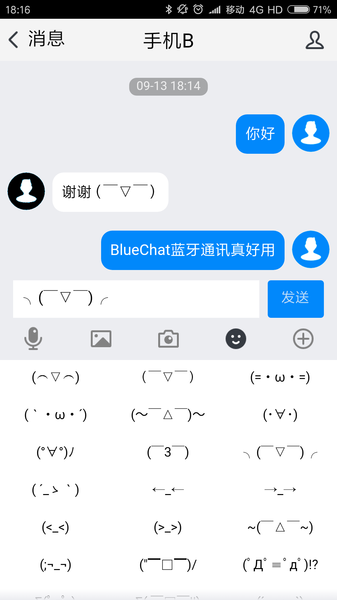

经过了长达周数的努力，在不断的探索与尝试之中，经历了无数次失败和挫折之后，这款基于 Android 操作系统，使用 MIT App Inventor 开发的蓝牙通讯app终于能够跟大家见面了，而我也即将进入下一个阶段的学习，不再使用App Inventor，而是使用代码进行程序的开发，但是，App Inventor 教会了我如何站在开发者的角度，真正为用户着想，如何不陷入技术细节当中而是理清解决问题的逻辑等等，这样的宝贵的东西还有很多很多，所以，还没有接触过 App 开发的同学也赶快来尝试一下这个只需要浏览器就可以开发 App 的编程工具吧。
在此，也要感谢在 BlueChat 开发过程中给予我帮助的人们，比如我的信息老师刘焱烽老师，是他带领我走进了 App Inventor，走进了手机应用开发的大门，也在我创作这款 App 的时候给了我很多的指导，他教会了我分析和解决程序开发中遇到的问题，让我真正感受到了一位创客教育先锋身上的真正的创客精神。同时，也要感谢在网上认识的 ColinTree （也许有人知道，他获得了2016年 App Inventor 应用开发全国中学生挑战赛的特等奖），虽然与我素不相识，但是耐心的回答了我的许多看起来低级的问题，也让我体验到了 App Inventor 的插件开发历程，同时我的作品中还是用到了他开发的 ColinTreeNotifier（系统原生对话框）插件。还要感谢在我开发过程中耐心听我讲解程序逻辑，演示程序，并给了我许多反馈意见的我的同学们。
半年的 App Inventor 学习已经过去，这款 App 不仅是参赛的作品，更是我交给自己的 App Inventor 的一份最终答卷，当然，这并不是一份满意的答卷，在很多地方做出了取舍，在这过程中遇到的问题和开创的解决方案写在了本文结尾的”创作心得“中，有兴趣的同学可以阅读。
刘臣轩
2017年9月13日
于深圳实验学校高中部信息教室
首先，需要打开手机蓝牙，并设置为开放检测模式，这里的手机名称有助于你的好友将你的手机和其他人的手机区分开，但是为了避免混乱，教程中使用的是系统默认的蓝牙名称。
打开蓝牙后需要跟你的好友进行配对，这一步是必不可少的！
配对完成之后就可以进入 BlueChat 了，此版面为教程版面，第二个版面为好友版面，第三个版面为设置版面，为了更愉快的聊天，我们先到第三个版面设置一下基本信息，由于是使用 App Inventor 开发的应用，能够设置的只有昵称，但是要知道，为了让另外的设备接收到这个昵称这一个小小的功能，背后的逻辑程序就复杂了很多。设置完成后记得点击保存，为了防止大家手滑，退出程序的按钮目前不可以使用 (=・ω・=)
接下来来到第二个界面，此处的列表会显示所有你已经配对的蓝牙设备（在编写教程前，我取消了10多个已有配对），选择你想要配对到的好友，注意，此处的一串是蓝牙设备标识符，不需要理解，后面的文字是在系统设置中设定的手机名称，并不是本程序中的名称。
选择完成后将会自动连接到对方的设备，当然，你的好友也需要下载并安装这款 App。如果信号不通畅或者遇到未知错误，将会提示无法连接，此时双方清除手机后台，重新开启程序即可。
连接上后对方的昵称会显示在屏幕的正上方，为了防止混淆，另外一台设备上我将昵称设置为了手机B。此时就可以愉快的和好友聊天了，当然，由于时间关系，语音发送和图片发送等功能没有实现，但是表情功能非常有意思，改变了 QQ 表情的固有思想，改用颜文字，使聊天内容更加生动活泼。
1.很多人使用 App Inventor 写出的应用程序都忽视了用户界面的设计，而 Android 默认的界面又严重缺乏美感，导致 App 的用户交互体验变得很差，但其实，用 App Inventor 也可以做出美观的界面。大家都知道可以在组件设计的部分设置组建的属性，例如背景颜色，文字大小，文本颜色等，但其实，在逻辑设计的部分也可以对组件的属性做出修改，只需要在界面初始化时设定需要特殊配色的组建的属性就行了，如果更用心一些，到网上找一些 png 格式的 icon，整个界面就会焕然一新，带给用户的体验好了不止一倍，当然，光有好看的界面也是不行的，程序逻辑设计部分才是程序的根本。
2.App Inventor提供的许多组件都只实现了 Android 中的小部分功能，例如，App Inventor 的列表显示框只能显示文本信息而不能做到图文并茂，这无疑阻碍了程序功能的丰富性，于是，一部分开发者选择通过编写插件的方式实现具有特殊功能的列表显示框，例如 ColinTree 的 ColinTreeListView 插件，但是，这样的方法对于没有基础的开发者来说无疑是一个巨大的挑战，加上 App Inventor 的开发文档并不方便访问，所以，插件开发其实有很高的难度，在探索的过程中，我发现了更为简单的解决方案，使用网页浏览框配合 HTML+Javascript，只需要进行简单的学习就可以做出不一样的界面，借助页面交换文件，还能够使网页和 App 程序之间进行数据交互，扩展性得到了大幅度的提升。
3.不少开发者将程序开发作为任务，认为只要功能实现了，开发就结束了，但实际上开发者不仅仅要保证程序的功能得到了实现，更要保证带给用户良好的体验，UI 设计的部分在第一点中已经讲到，在这里主要讲的是交互方式，开发者需要站在用户的角度进行思考，减轻用户的学习负担，简化用户的操作，使用恰当的方式给用户提供反馈，例如，我的程序中使用了 ColinTree 的 ColinTreeNotifier 插件，在用户进行了特定操作时，就会显示特定的提示信息，用户才会有与程序进行交互的感受。
4.一个良好设计的程序的基础必然是对基础知识的了解，作为开发者，不能够遇到了问题，再寻找哪个组件能够解决自己的问题，而是首先对基础组件进行详尽的了解，在程序设计阶段就分析出每个部分涉及到的组件，用怎样的组合能够解决问题，一个完好的设计方案往往需要花费大量的时间，进行大量的文献查阅，背景资料搜集等，但有了设计方案，就不会在开发过程中才发现问题，发现写好的程序遇到了无法修改的逻辑错误，导致整个工程推翻重做。